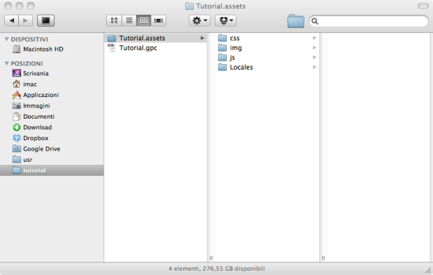
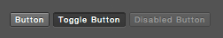

Configurator PS CS6 Styles
Photoshop CS6 Styles for Configurator is a small ongoing project to provide a consistent UI for the Adobe Configurator HTML widget.
Basically you will be able to develop your own HTML application plugin with the full Photoshop CS6 user interface
and experience.
Please note that although this set is based on Bootstrap, it has been written for the HTML Configurator widget, so you most probably won't have cross-browser compatibility if you will need it for some other purpose.
Setup
Setting up the style is quite easy (I'm assuming that you have some basic knowledge of HTML and CSS and know how to setup a Configurator project with and HTML widget).
1. Copy the Files
Copy the css, img and js folders (you will find them in the ConfiguratorPsCS6Styles.assets foder) you downloaded from the project page into your Configurator project folder (usually {YourPanelName}.assets). These files already include the Bootstrap base elements.
2. Create an HTML page
Now create a regular HTML page and save it in your project folder.<!DOCTYPE html>
<html>
<head>
<title>App Title</title>
<link href="css/bootstrap.css" rel="stylesheet" media="screen">
<link id="theme_stylesheet" href="css/ps-cs6-medium-dark.css" rel="stylesheet"
media="screen">
</head>
<body class="ps-cs6">
<p>Content...</p>
<script src="js/jquery.js"></script>
<script src="js/bootstrap.js"></script>
</body>
</html>
As you can see we have declared the main Bootstrap css (and its required scripts) and added the medium dark
style of Photoshop CS6. Please note that we have declared the class ps-cs6 for the body: this will
create a
nice grey background and set the main typography for the application once you assign the
html
page to the widget.
3. Switching Styles at Runtime
If you export your panel, you will notice that this style is nice for the medium grey interface of Photoshop. However this won't do any good if the user has opted for light, medium light or dark!
Fortunately we can add a listener for the ThemeChangedEvent (i.e.: when the user changes interface
theme):
<!DOCTYPE html>
<html>
<head>
<title>App Title</title>
<link href="css/bootstrap.css" rel="stylesheet" media="screen">
<link id="theme_stylesheet" href="css/ps-cs6-medium-dark.css" rel="stylesheet"
media="screen">
<script type="application/javascript">
function onThemeChanged(event) {
if (event.appSkinInfo.panelBackgroundColor == "343434")
document.getElementById('theme_stylesheet').href = "css/ps-cs6-dark.css";
else if (event.appSkinInfo.panelBackgroundColor == "535353")
document.getElementById('theme_stylesheet').href = "css/ps-cs6-medium-dark.css";
else if (event.appSkinInfo.panelBackgroundColor == "d6d6d6")
document.getElementById('theme_stylesheet').href = "css/ps-cs6-light.css";
else if (event.appSkinInfo.panelBackgroundColor == "b8b8b8")
document.getElementById('theme_stylesheet').href = "css/ps-cs6-medium-light.css";
// if none of these colors are found, fallback to isLight/isDark
else if (event.isLight)
document.getElementById('theme_stylesheet').href = "css/ps-cs6-medium-light.css";
else
document.getElementById('theme_stylesheet').href = "css/ps-cs6-medium-dark.css";
}
</script>
</head>
<body class="ps-cs6" onload="addEventListener('ThemeChangedEvent', onThemeChanged)">
<p>Content...</p>
<script src="http://code.jquery.com/jquery.js"></script>
<script src="js/bootstrap.js"></script>
</body>
</html>
As you can see the code is quite straightforward: we check when the theme changes and assign the appropriate stylesheet.
The last two else if/else statements are "just in case" the panel background color is not found: we check
if the theme is light or dark.
You are now ready to create your own Photoshop CS6 styled application. Following you can find a reference of all available styles.
Style Reference
Using the styles is quite easy: you will be using the regular Bootstrap classes, usually adding a class named ps-cs6
when the element is available.
Core Styles
To add the overall Photoshop look&feel, simply add a ps-cs6 class declaration to the body
tag:
<body class="ps-cs6">Disabled Components
In some situations you may need to disable some components: in these cases simply use the regular procedure for Bootstrap. As an exaple, to ste a text as disabled, use:<span class="disabled ps-cs6">Disabled Text</span>Buttons
As in Bootstrap, you can use <button> <a> <input> tags:
<button class="btn ps-cs6">Button</button><a href="#" class="btn ps-cs6">Button</a><input class="btn ps-cs6" type="button" value="Input"/><input class="btn ps-cs6" type="submit" value="Submit"/>Additionally, the element can be of toggle type:
<button class="btn ps-cs6" data-toggle="button">Button</button>
Alternative Buttons
Photoshop has some nice UI buttons to be used in some particular cases.The switch button (which can also be set to on state):
<button class="btn switch ps-cs6 active" data-toggle="button">...</button><button class="btn switch ps-cs6 on" disabled="disabled" data-toggle="button">...</button>The checkbox button:
<button class="btn checkbox ps-cs6" data-toggle="button">Button</button>The borderless button (this makes more sense if used with an icon as content instead of regular text):
<button class="btn ps-cs6 borderless">Button</button>Toolbars
To declare a toolbar, use this syntax:
<div class="btn-toolbar ps-cs6"></div>and then insert the button elements as described above. You can, of course, use both vertical and horizontal toolbars.
Inputs and Text Areas
Again, you should simply add a ps-cs6 class:
<input type="text" class="ps-cs6"/><textarea class="ps-cs6"></textarea>Dropdowns and Dropups
The dropdown menu is declared in a similar way to the regular Bootstrap one.
<div class="btn-group">
<button class="btn ps-cs6 dropdown-toggle" data-toggle="dropdown">Drop Down<span class="caret"></span></button>
<ul class="dropdown-menu ps-cs6" role="menu" aria-labelledby="dLabel">
<li><a href="#">Action 1</a></li>
<li><a href="#">Action 2</a></li>
<li><a href="#">Action 3</a></li>
<li class="divider"></li>
<li><a href="#">Action 4</a></li>
</ul>
</div>
To declare a dropup menu, simply add the dropup class to the button group declaration:
<div class="btn-group dropup">
...
</div>
Please note that at the moment the Photoshop panel runtime has some serious issue with the
<select> element, so it is impossible to use it in a Configurator application.
Tabs
Simply add ps-cs6 to your tab ul list.
<ul class="nav nav-tabs ps-cs6">
<li class="active"><a href="#">Tab 1</a></li>
...
</ul>
Additional Components
An extension set using JQuery UI is also available. To use these components, simply add the required styles and scripts for the library:
<link href="css/jquery-ui.css" rel="stylesheet" media="screen">and
<script src="js/jquery-ui.js"></script>Sliders
As the components described above, you simply have to add a ps-cs6 class and use the regular JQuery UI syntax for a slider.